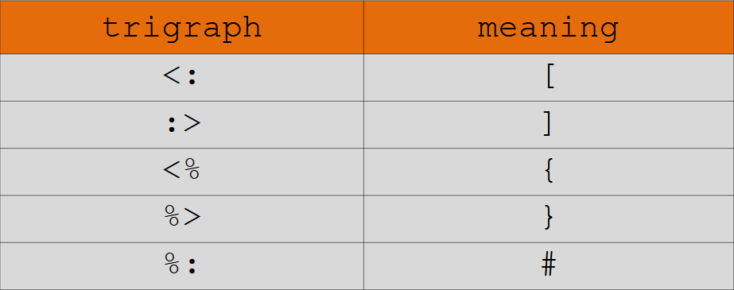

Trigraphs and digraphs
Before ASCII, there were too many standards foro character encoding and many of them didn't include many characters used in C.
The EBCDIC encoding didn't have square brackets. So, they used to write
int main(int argc, char **argv){return 1;}
instead of
int main(int argc, char *argv[]){return 1;}
To avoid such contradictions, the special characters used to be expressed dusing specially defined sequences of characters as extended language definition.
The choice was a three-character-long sequence was called trigraph.
So, the code above can be written as,
int main(int argc, char *argv??(??))??<return 1; ??>
Another switch has to be added in order to compile
gcc -trigraphs example.c
Later, trigraphs has been replaced by digraphs which consists of two characters.

No switch is necessary for digraphs.
- Preprocessor converts trigraphs
- Compiler converts digraphs
- Trigraphs are recognized inside string literals (you can use escape sequence \? or use separately)
Digraphs aren't recognized inside strings.